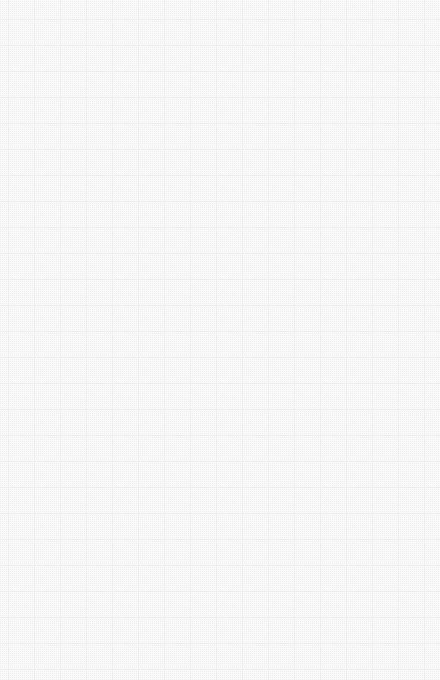
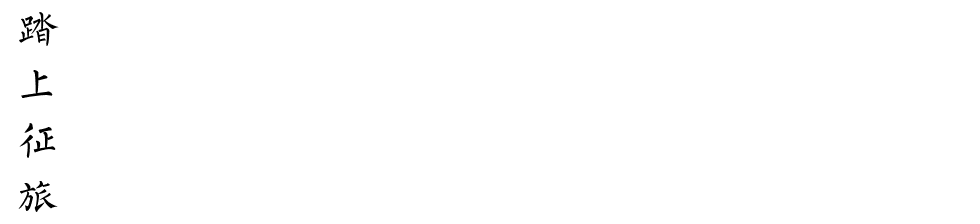
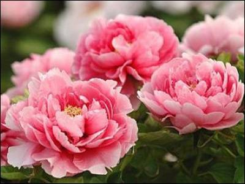
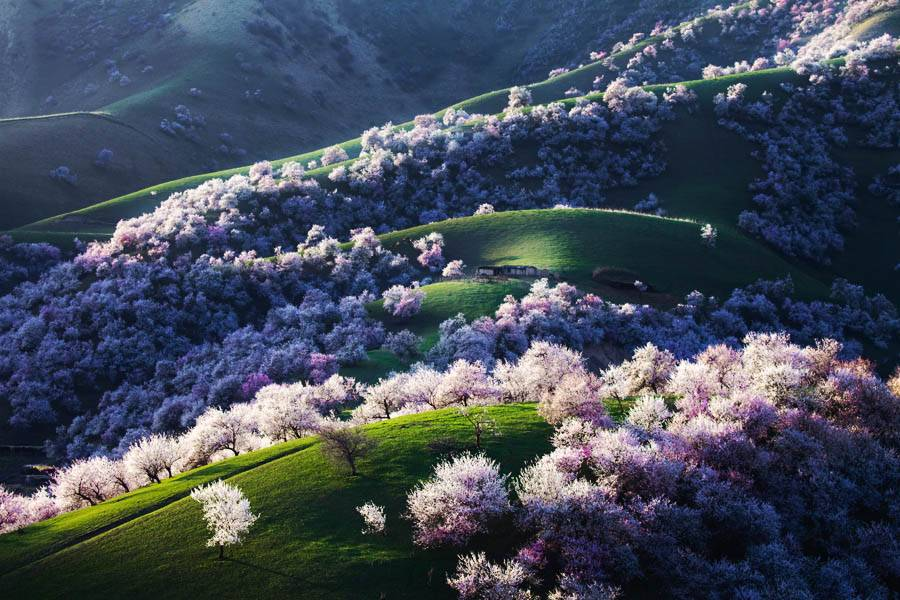
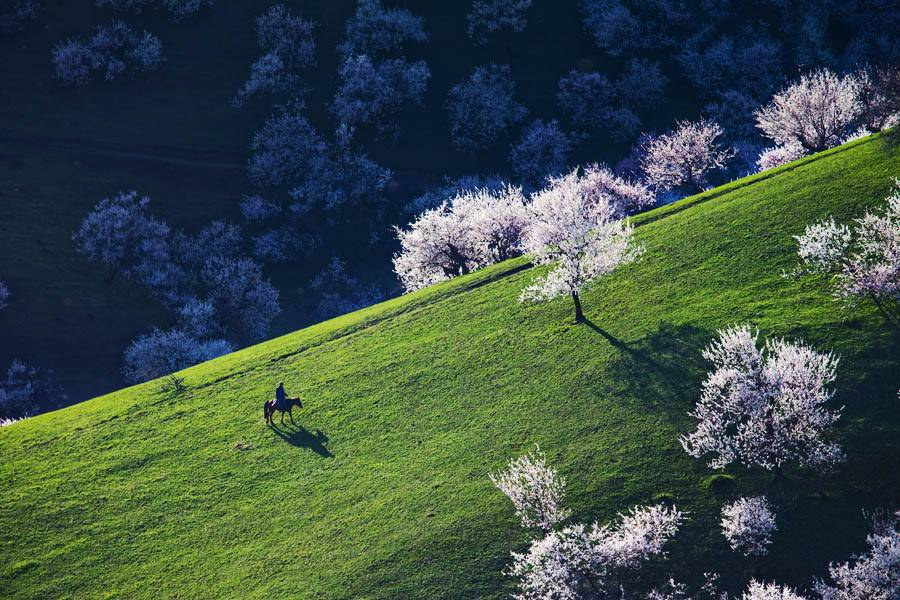

点击关注我
7
嘉阳小火车，世界上唯一仍在运行的客运蒸汽窄轨小火车。现在正是油菜花盛开的季节，是否脑子里现在浮想出“坐在世界上唯一运行的小火车上面穿越油菜花的画面”先让你过一过干瘾吧!小火车，发出“呜---呜----”的汽笛声，在窄窄的铁轨上，以每小时20公里的速度前行，这样的速度可以让你慢慢欣赏窗外的大片油菜花。每年的4月份，是那里最美的时候!
6
一路郁郁葱葱，鸟语花香，不时可见绿树掩映的深深坑洞内闪现一抹亮蓝，一汪碧绿，星星点点竟有七个之多，似对应着天上的北斗七星。与天呼应，这还不是天赐福地吗?一时脑中闪现蓬莱仙境，此处却有过之而无不及。凤山世界地质公园的一个天然溶洞里，午后斑驳的阳光从洞口穿透进来，映射在巨大的洞厅石壁上，仿佛置身于金碧辉煌的宫殿之中。
5
不可否认，4月的杭州非常美丽。太子湾，苏堤，西湖，西溪湿地都美的让人心醉。可是这些地方同样人满为患。不妨去茅家埠，位于杨公堤中段，茅家埠“野趣”虽人工营造，但不失真实朴素，游人漫步“乡间小路”，“荒芦”丛生，滩涂卵石杂陈，由硬木排支撑的栈道直通芦荡深处。芦苇之中，野鸭戏水，候鸟低飞，好一幅乡野情趣图。

4
菏泽是国家命名的“中国牡丹之都”，每年4月在这里举办的菏泽国际牡丹文化旅游节也成为全球最为著名的牡丹花会。牡丹雍容华贵，仪态万方，在中国古代常用其比喻国母之尊，成为母仪天下的象征。中国历史上第一位皇后——吕后就诞生在菏泽（单县），后世也有多位皇后诞生于此。因此菏泽也有着“国母故里”的美称。
3
四川丹巴藏寨曾被《中国国家地理》评为“中国最美的乡村”第一名。有“千碉之国”、“美人谷”的美称。被誉为“东方金字塔”的古碉群，是嘉绒藏区灿烂文化的象征和悠久历史的见证。这里的女孩个个艳丽如玫瑰，娇媚似桃花。每到4月初，万亩梨花在山坡、碉楼、藏寨边绽放，绵延百余公里的金川河两岸，粉装玉砌，美不胜收。
2
西藏林芝“桃花沟”，三面环山，高处有水源，四周林木葱郁，拥有一片天然野生桃林。每年的四月，寒意未尽，远方的雪峰白雪皑皑，但是这片巨大的野桃林，桃花已如醉霞绯云般争奇斗艳，给林芝带来了一片壮丽的春天。

1
新疆新源县有一片中世纪遗留下来最大的原始野杏林，每年的4月10号到20号之间开花，花期一般在4-5天，早上日出时间8点，晚上落日20点30分左右。面积约3万余亩，杏树林在沟沟壑壑，绵延十几公里，山坡上野杏花竞相开放，或雪白或粉红的杏花，弥漫着明朗鲜艳的气息，几公里之外，都能闻到清新的杏花香味，相当的震撼。
